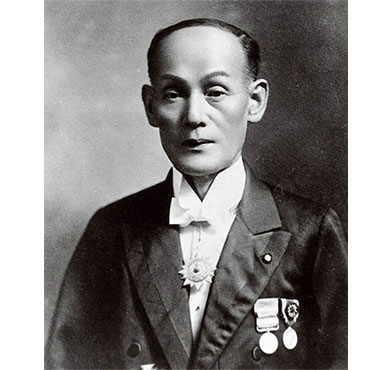
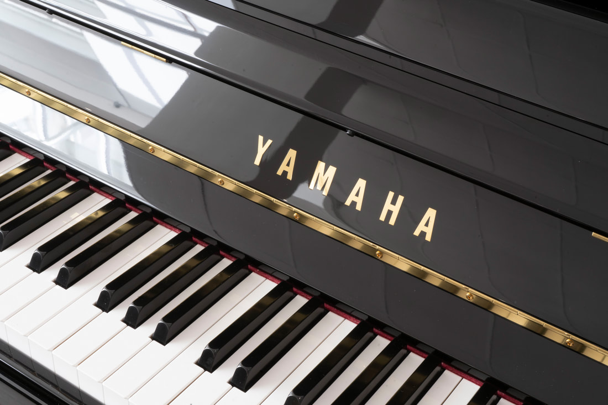
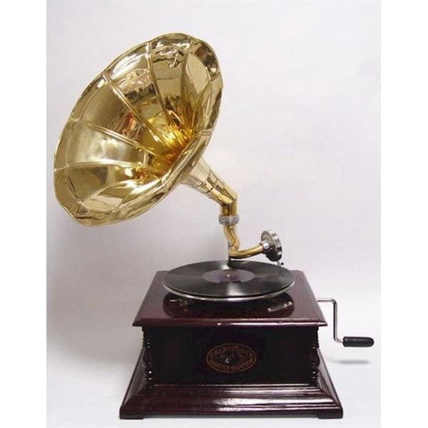
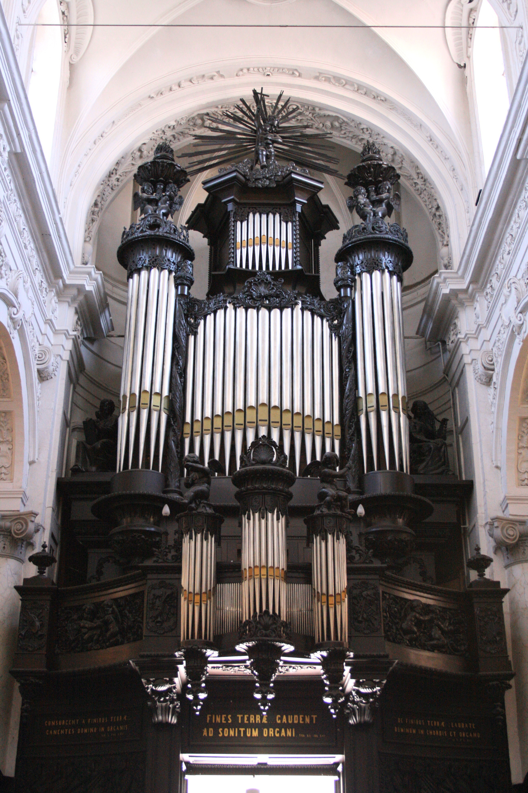
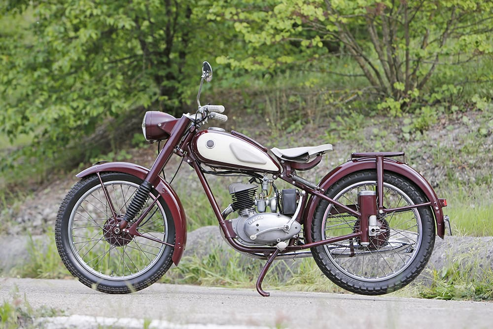
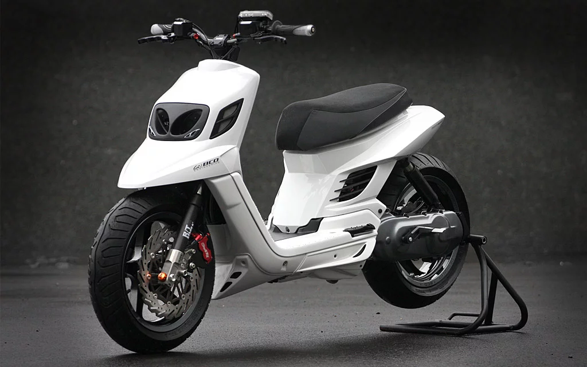

1887
Torakusu
Het Yamaha concern vindt zijn oorsprong in 1887, toen Torakusu Yamaha begon met het bouwen van reed organ instrumenten.
1897
Nippon Gakki Co., Ltd

In 1897 richtte Yamaha met enkele anderen de Nippon Gakki Co., Ltd (Japanse muziekinstrumenten onderneming) op.
1900
Yamaha piano's
In dit jaar begon de Yamaha corporation van het bouwen van piano's.
1922
Grammofoons
In 1922 begonnen ze met de productie van grammofoons. Dit zijn de platensplers van nu. De eerste modellen waren opwindgrammofoons met een hoorn.
1932
Pijporgels
In 1932 begonnen ze met het produceren van pijporgels. De grote piano's die je ook wel is terug ziet in een kerk
1942
Gitaren

Dit is het jaar waarin ze begonnen met de productie van de akoustise gitaren.
1954
Start produceren motoren
Het bedrijf Nippon Gakki, dat al vanaf 1897 muziekinstrumenten maakte, begon in 1954 motorfietsen te bouwen. De eerste waren 48cc- en 125cc-tweetakten, in feite kopieën van de DKW RT 125. Dit werd de Yamaha YA 1 Red Dragonfly. Later kwam er een kopie van de Adler MB 250, de YD 1.
1961
Roterende inlaten

Er werd een nieuwe fabriek in Iwata gebouwd. De tweetakten werden in sneltreinvaart doorontwikkeld: in 1961 had men racemachines met roterende inlaten.
1964
membraaninlaten

1964 kwamen er membraaninlaten en automatische smering (autolube). Met wat zwaardere typen werden grote successen in de wegrace geboekt en vanaf de XS 650-tweecilinder in 1969 kwamen er ook viertakten.
1983
Overnamen Motobécane
In 1983 nam Yamaha het failliete Motobécane over. Deze Franse tweewieler gigant was op dat moment een van de grootste fiets-en bromfiets fabrikanten ter wereld. In 1984 veranderde Yamaha de merknaam Motobécane in MBK.